Source: AVEVA Application Server 2023 Training Manual, Lab 12: Configuring and Retrieving History (pages 6-11 to 6-22)
Hands-on lab covering platform-level history settings, enabling history on template attributes, deploying to production, and verifying data collection using Historian Client Web.
Reference: Lab 12 (pages 6-11 to 6-12)
This lab walks through the complete history workflow — from configuring the platform's Store and Forward settings, to enabling history on individual attributes in your templates, to deploying the changes to the production platform, and finally verifying that data is flowing into the Historian using Historian Client Web.
Prerequisites: You should have completed Labs 9–11 with the production platform deployed, objects running under AppEngine1 → ControlSystem → Line1/Mixer100, and Historian Client Web accessible (typically at http://localhost:32573).
Reference: Lab 12 (pages 6-11 to 6-13)
Before enabling history on individual attributes, verify that the WinPlatform is properly configured for historical data collection. The platform's Store and Forward settings control how historical data is buffered locally before being sent to the Historian.
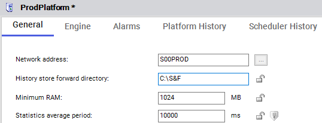
The key settings on this tab:
| Setting | Value | Purpose |
|---|---|---|
| Network | S00PROD | The network address where this platform is accessible |
| History store and forward path | C:\S&F | Local disk path where historical data is buffered before forwarding to the Historian |
| Min RAM | 1024 MB | Minimum RAM reserved for platform operations |
| Stats average period | 10000 ms | How often platform statistics are averaged (10 seconds) |
C:\S&F. If the Historian is temporarily unreachable (network outage, maintenance, etc.), data is buffered on disk. When connectivity is restored, the cached data is forwarded automatically. This guarantees zero data loss during transient failures.
The Platform History tab (also visible on this page) provides additional settings for controlling exactly which attributes are historized at the platform level. In most configurations, you enable history at the individual attribute level (covered in the next section) rather than at the platform level.
Reference: Lab 12 (pages 6-13 to 6-16)
History is enabled on a per-attribute basis. The most efficient approach is to enable it on the template, then check in the changes so they propagate to all descendant (instance) objects. This lab enables history on two key attributes: the SMeter PV and the SValve command/state attributes.
Reference: Lab 12 (page 6-13)
Navigate to the SMeter template and open the PV attribute in the Attribute Viewer. Ensure the following properties are set:
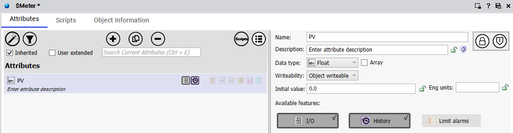
The critical step is checking the History box. Without this, the Historian will never collect data for this attribute, regardless of any other configuration.
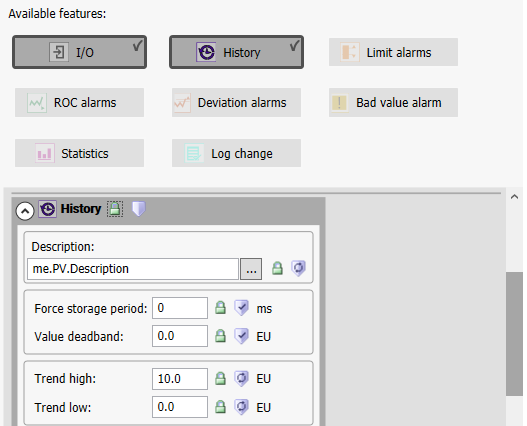
Reference: Lab 12 (pages 6-14 to 6-15)
After checking the History box, expand the History section to configure the detailed parameters that control how data is collected and displayed:
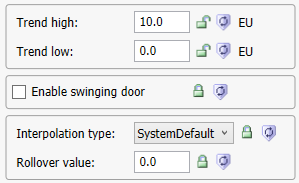
| Parameter | Value | Meaning |
|---|---|---|
| Trend High | 10.0 | Upper bound of the Y-axis for Historian Client trends — scale the display to this maximum |
| Trend Low | 0.0 | Lower bound of the Y-axis for Historian Client trends — scale the display to this minimum |
| Rollover | 0.0 | Value at which the counter resets (0.0 = no rollover — used for counter-type tags) |
| Interpolation | SystemDefault | How the Historian fills in values between data points (SystemDefault uses the server's configured method) |
| Swinging Door | Unchecked | Compression algorithm — when unchecked, all data points are stored without compression |
Reference: Lab 12 (pages 6-16 to 6-17)
Before checking in the template changes, it is useful to understand how attributes are inherited across the template hierarchy. The $Mixer_Agitator object demonstrates this clearly:
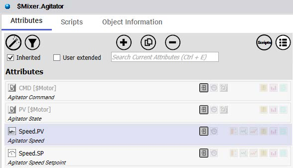
[$Motor] template (shown in brackets), while Speed.PV and Speed.SP are local attributes. The bracketed template name indicates the source of each inherited attribute (page 6-16)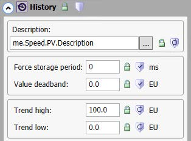
Similarly, the SValve attributes show the same inheritance pattern:
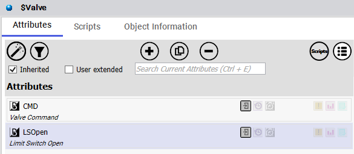
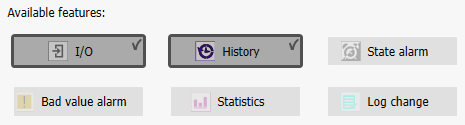
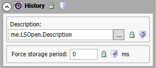
Reference: Lab 12 (pages 6-18 to 6-19)
After enabling history on the template attributes, check in the changes. This triggers the Galaxy to propagate the modifications to all descendant objects that inherit from the modified templates.
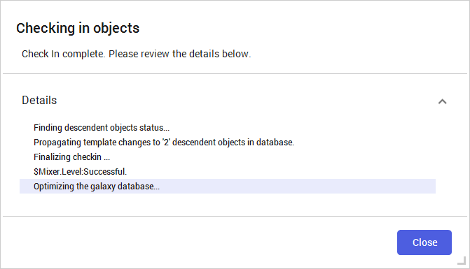
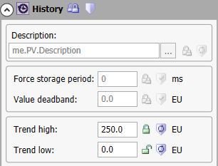
Reference: Lab 12 (pages 6-19 to 6-20)
With the template changes propagated, deploy the updated galaxy to the production platform. This pushes the new history configuration to the running system.
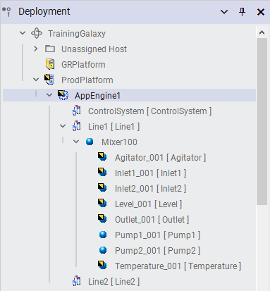
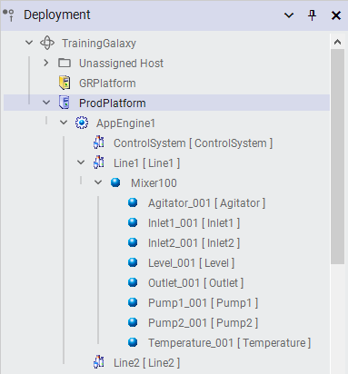
At this point, the production platform is actively collecting historical data for all attributes that have History enabled. The Store and Forward mechanism on the WinPlatform buffers this data locally before forwarding it to the Historian.
Reference: Lab 12 (pages 6-21 to 6-22)
Historian Client Web is the primary tool for viewing and analyzing historical data. Access it through a web browser — typically at http://localhost:32573 or the Historian server's IP address.
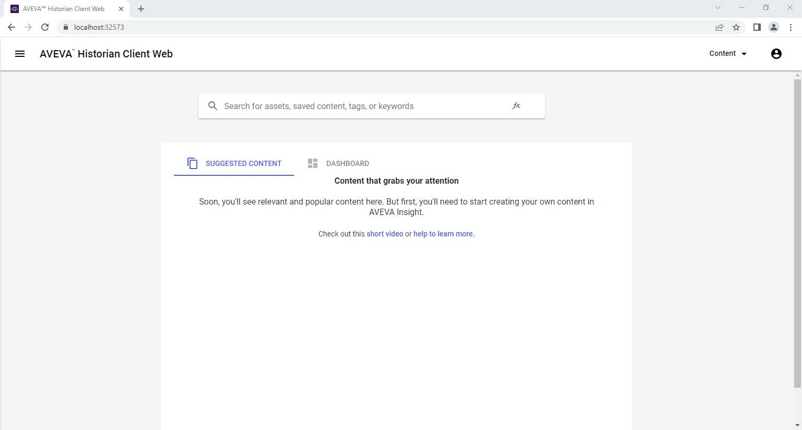
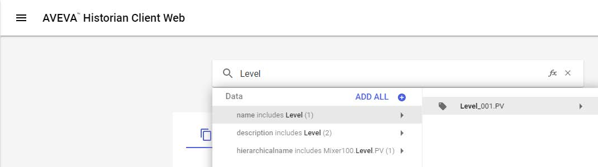
Reference: Lab 12 (pages 6-21 to 6-22)
Select the Level_001.PV tag in Historian Client Web and create a trend to verify data collection is working:
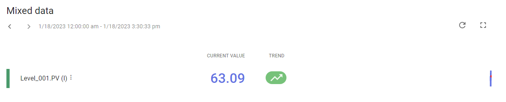
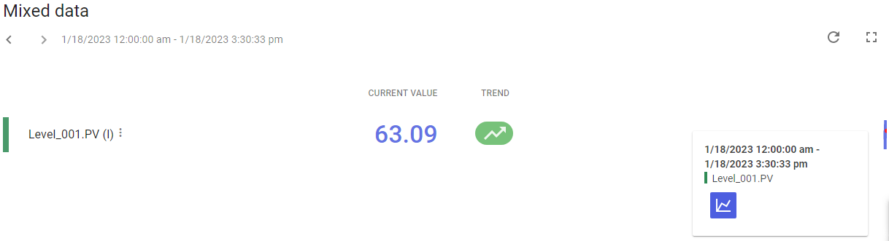
The (I) suffix after the value indicates interpolation — the Historian calculated this value by interpolating between the nearest stored data points. This is normal behavior and confirms the interpolation setting (SystemDefault) is working correctly.
Reference: Lab 12 (page 6-22)
Use the time selector in Historian Client Web to zoom out and view long-term trends. This reveals the full history of the tag since collection began:
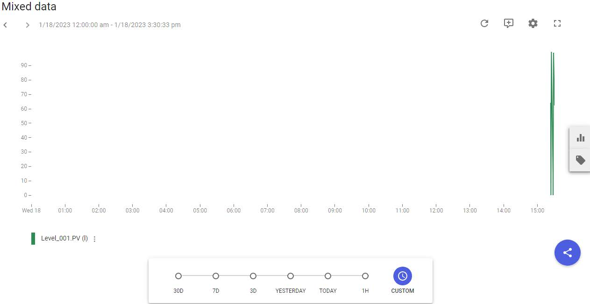
Reference: Lab 12 (page 6-22)
This lab demonstrated the complete end-to-end history workflow in Application Server:
| Step | Action | Key Detail |
|---|---|---|
| 1 | Configure Platform S&F | Set the Store and Forward path on the WinPlatform (e.g., C:\S&F) to buffer historical data locally |
| 2 | Enable History on attributes | Check the History box on template attributes (SMeter.PV, SValve.CMD/LSOpen) |
| 3 | Configure history parameters | Set Trend High/Low, deadband, interpolation, and storage period per attribute |
| 4 | Check in changes | Template changes propagate automatically to all descendant objects |
| 5 | Deploy to production | Deploy the updated galaxy to push the history configuration to the running system |
| 6 | Verify with Historian Client Web | Create trends, check current values, and examine long-term data patterns |
Q1: What is the purpose of the Store and Forward (S&F) cache on the WinPlatform?
The S&F cache buffers historical data on local disk when the Historian is temporarily unreachable. When connectivity is restored, the buffered data is forwarded automatically, guaranteeing no data loss during transient outages.
Q2: What happens if you forget to check the History box on an attribute?
The Historian will not collect any data for that attribute, regardless of other settings. The History checkbox is the master switch — without it enabled, no historical data is stored for that attribute.
Q3: What does the (I) suffix after a value in Historian Client Web mean?
It indicates the value is interpolated — the Historian calculated it by interpolating between the nearest actual stored data points. This is normal behavior, especially when viewing data at time points between stored samples.
Q4: Why should you enable history on the template rather than on individual instances?
Enabling history on the template allows you to configure it once and have the changes propagate automatically to all descendant objects during check-in. Enabling it on instances would require repeating the configuration for each one individually.
Q5: In the ProdPlatform General tab, what is the default Store and Forward path shown in the lab?
C:\S&F — this is the local disk path where the platform buffers historical data. In production, use a dedicated, high-capacity drive with sufficient space for extended Historian outages.
Q6: What does a flat line at 0 followed by a sharp spike in a long-term trend indicate?
It indicates when history collection started — the flat line represents the period before data was being collected (no data stored), and the spike represents the first real values arriving once history was enabled. Over time, the trend becomes a continuous line.
Q7: What does setting Force storage period to 0 ms mean, and when would you use a non-zero value?
Force storage period = 0 ms means on-change storage — data is stored only when the attribute value actually changes. A non-zero value (e.g., 5000 ms) forces periodic storage at that interval regardless of change, which is useful for critical process variables where guaranteed periodic snapshots are needed.
Click each answer to reveal it.
🎉 This lesson completes the AVEVA Application Server training curriculum — Modules 1 through 6.